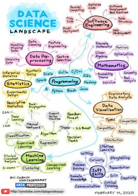
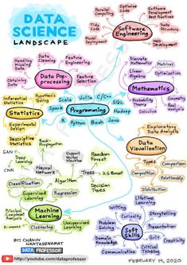

Data Science
What is Data Science?
Data science is the study of data to extract meaningful insights for business. It is a multidisciplinary approach that combines principles and practices from the fields of mathematics, statistics, artificial intelligence, and computer engineering to analyze large amounts of data.
Why is data science important?
Data science is important because it combines tools, methods, and technology to generate meaning from data. Modern organizations are inundated with data; there is a proliferation of devices that can automatically collect and store information. Online systems and payment portals capture more data in the fields of e-commerce, medicine, finance, and every other aspect of human life. We have text, audio, video, and image data available in vast quantities.
What is data science used for?
Data science is used to study data in four main ways:
- 1.Descriptive analysis
- Descriptive analysis examines data to gain insights into what happened or what is happening in the data environment. It is characterized by data visualizations such as pie charts, bar charts, line graphs, tables, or generated narratives. For example, a flight booking service may record data like the number of tickets booked each day. Descriptive analysis will reveal booking spikes, booking slumps, and high-performing months for this service.
- 2. Diagnostic analysis
- Diagnostic analysis is a deep-dive or detailed data examination to understand why something happened. It is characterized by techniques such as drill-down, data discovery, data mining, and correlations. Multiple data operations and transformations may be performed on a given data set to discover unique patterns in each of these techniques.For example, the flight service might drill down on a particularly high-performing month to better understand the booking spike. This may lead to the discovery that many customers visit a particular city to attend a monthly sporting event.
- 3. Predictive analysis
- Predictive analysis uses historical data to make accurate forecasts about data patterns that may occur in the future. It is characterized by techniques such as machine learning, forecasting, pattern matching, and predictive modeling. In each of these techniques, computers are trained to reverse engineer causality connections in the data.For example, the flight service team might use data science to predict flight booking patterns for the coming year at the start of each year. The computer program or algorithm may look at past data and predict booking spikes for certain destinations in May. Having anticipated their customer’s future travel requirements, the company could start targeted advertising for those cities from February.
- 4. Prescriptive analysis
-
Prescriptive analytics takes predictive data to the next level. It not
only predicts what is likely to happen but also suggests an optimum
response to that outcome. It can analyze the potential implications of
different choices and recommend the best course of action. It uses
graph analysis, simulation, complex event processing, neural networks,
and recommendation engines from machine learning.
Back to the flight booking example, prescriptive analysis could look at historical marketing campaigns to maximize the advantage of the upcoming booking spike. A data scientist could project booking outcomes for different levels of marketing spend on various marketing channels. These data forecasts would give the flight booking company greater confidence in their marketing decisions.
 
